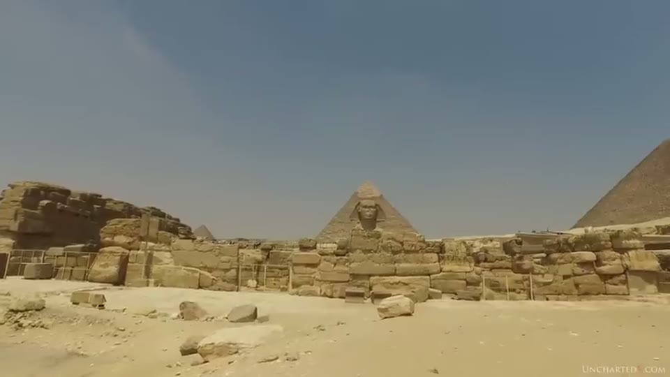
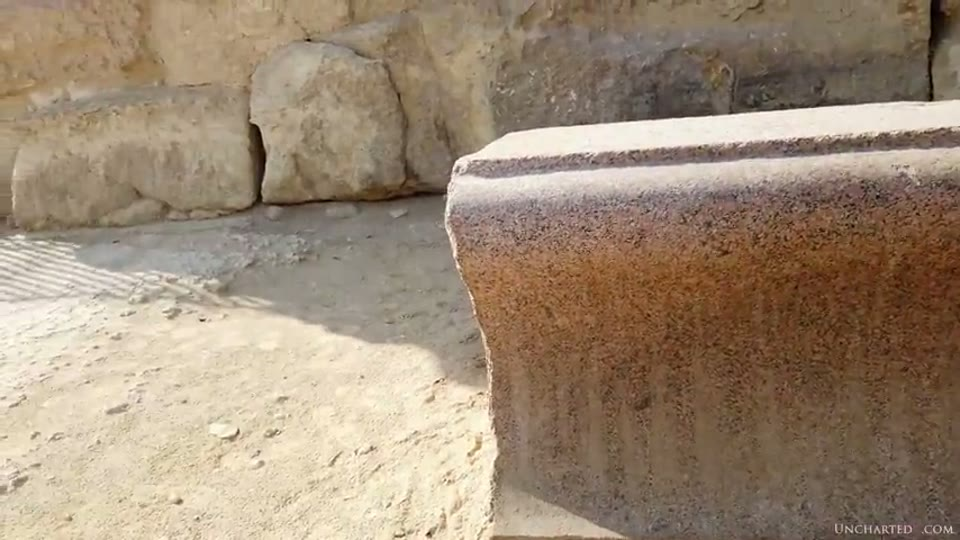
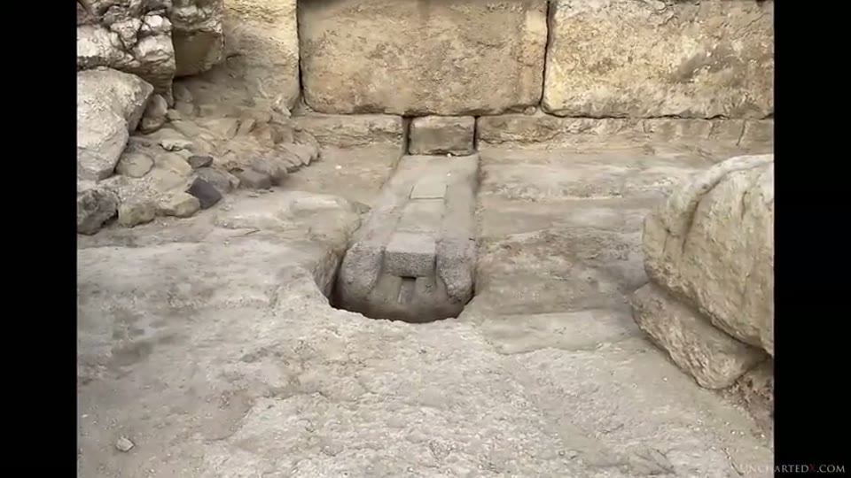
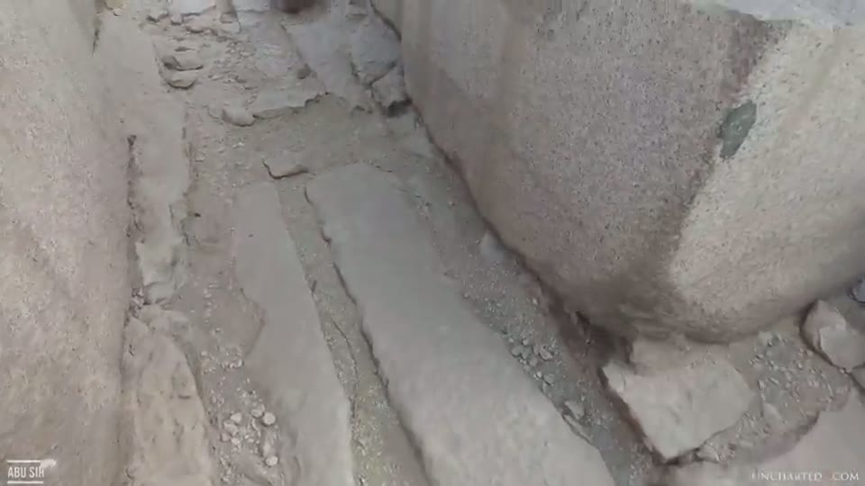

UnchartedX
The Mystery of the Sphinx Temple! Evidence for Hidden Chambers, High Tech, and Secret Digs?
Ben van Kerkwyk · 61 min · watch on YouTube · summarised 2026-10-02
Filmed inside the Sphinx Temple on a special-permission visit in late 2022. The structure sits directly in front of the Great Sphinx, next to the Valley Temple, behind barricades and welded-shut gates, and is described as seen by almost nobody outside the officials in charge 00:34–01:35. The video has four separable parts: the excavation record, a documentary argument about what the stelae of Giza depict, a precision claim about a set of granite cornice blocks, and a long investigation into who has drilled and scanned beneath the Sphinx and under what permissions.
The structure, and what it is attributed to
The temple is a core of limestone blocks, many stated as well in excess of 100 tons, originally cased inside and out in finely shaped granite and floored in alabaster or white calcite 04:39–05:10. Nearly all of that facing is gone. A few granite casing blocks remain in place, and in one area the around-the-corner technique also found in the Valley Temple and in the megalithic walls of Peru.
Three features of its construction carry the argument 05:10–07:43. The bedrock floor is oddly shaped, which he reads as the negative of three-dimensional, puzzle-piece foundation blocks that locked the structure together — the same technique he identifies in the foundation tiles under the Great and Middle pyramids, and discussed in the Old Kingdom timeline entry. There are upright masses that are not blocks at all but bedrock left standing, with depressions cut in front of them. And in several walls, particularly at the western end, the bottom course is shaped from bedrock rather than built, forming what he reads as symmetrical alcoves. "Notice this here, this is all actually carved into the bedrock."

The structure the argument is about, and the bedrock masses standing in it.
On dating, he states the standard position and then marks where he thinks it rests. The accepted model assigns the temple to the Fourth Dynasty, to Khafre, circa 2550 BC, on the strength of its location beside the Valley Temple and in front of the Sphinx — and "when you dig into the details, there is in reality very little evidence that directly ties its original construction to that period" 02:37–03:07.
Buried before the Egyptians
The temple's burial is the dating argument, and it is made entirely from other people's excavations 08:13–17:38.
Around 1450 BC, Amenhotep of the 18th Dynasty built his own temple north of the Sphinx and laid a corner of its foundation on top of the already-buried Sphinx Temple. Part of Captain Caviglia's 1816 excavation revealed a Roman-era staircase and ramp built across the whole width of the still-buried structure — which he offers as proof it was as unknown to the Romans as to the 18th Dynasty.
Then the sequence of failures. Auguste Mariette worked there in 1853 and did not clear it. Gaston Maspero attacked the problem around 1886, bought some 800 m of rail line and carts, and after fifteen days had not even re-exposed Caviglia's Roman staircase, because the desert had undone the earlier work; he switched to the body of the Sphinx and ran out of time and money before his Decauville motor cars arrived. Émile Baraize cleared the Sphinx from all sides in 1925 but held the sand back with what Selim Hassan called "huge barrage-like walls" that had to be demolished in 1936–37: "I believe that Baraize had taken his inspiration from the monuments of the Old Kingdom and had built for eternity." Hassan finished the job in the 1940s and published it in The Sphinx, Its History in the Light of Recent Excavations (1949), which supplies most of the quoted material in the video. His clearance ran three superposed truck lines and sometimes fan-wise, twelve trucks of one cubic metre each, about 1,300 cubic metres of sand a day carried over a kilometre away.
Two things are drawn out of this record. Hassan's own description of the masonry — "the size of some of the blocks forming the core masonry of the Sphinx Temple is enormous, rivaling and indeed often exceeding three times the size of the stones used in the building of the Great Pyramid" — followed immediately by Hassan's own qualification, that quarrying them locally "does not lessen our admiration for the skill and organization that maneuvered them into position". And Hassan's placement of the building: "this building is the oldest divine temple as distinct from a royal mortuary temple yet discovered in Egypt", with every important feature duplicated — two entrances, two sets of chambers in the western wall, two outer passages.
Hassan's before-and-after photographs are used for a different point 13:20–14:20: they were taken a decade after Baraize had already cleared the site, and the sand is back. The plates themselves carry Hassan's printed captions, "FIG. 3A.—THE SPHINX SITE BEFORE EXCAVATION" and "FIG. 3B.—THE SAME AFTER EXCAVATION", and neither caption carries a date or mentions re-burial; the decade between them is supplied by the narration.

The excavation plates, and what their own captions say.
He turns that into an aside on the erosion debate — whether the enclosure walls were cut by heavy precipitation, as Robert Schoch argues, or by wind and sand, as he says most Egyptologists hold — and adds the question of why the head, the part always above the sand, does not show the same wind-and-sand weathering. He refers the viewer to his own earlier work rather than arguing it here; the erosion study is that work, and Curious Being reaches a third position again in the Sphinx water erosion entry, where the enclosure is read as a deliberately cut stormwater catch basin.
One concession sits in the middle of this section 12:50–13:20. The 1920s–30s repairs to the Sphinx — the masonry collar supporting the head, the filled and coloured cracks across the face — are, he says, "which some people to this day claim to be some ancient form of magical geopolymer, a commonly made mistake in many structures on the plateau that have been repaired in modern times." He makes the same refusal at length in the Lahun box entry.
The pedestal of the Sphinx
This is the chapter the rest of the video is built on, and it is documentary rather than physical 17:38–22:01.
The Dream Stele of Thutmose IV, around 1400 BC, found between the paws and carved from a recycled Old Kingdom granite block, shows the Sphinx seated on a pedestal. The Sphinx is not on a pedestal — it is cut from bedrock — and for a long time, before the enclosure was cleared, people working on the site expected to find one. Hassan's count is the evidence: of 51 stelae bearing representations of the Sphinx known to have come from Giza, 31 show it on a pedestal of that type, and seven bear representations of doors. The remaining 19 he describes as damaged, small, crudely carved or lacking detail. Stele 12 from Hassan's own excavations shows the Sphinx lying on a building surmounted by a cavetto cornice and provided with a doorway. The Louvre stele of an official named Nezem-merit adds a flight of six steps to the base of the pedestal, which also has a door, and is described inside Hassan's text as "a naos with a narrow doorway, and approached by a staircase". The stele of Khufu's daughter shows the naos form without door or staircase.
Hassan's answer, read out in full, is that the pedestal of the Sphinx is the natural rock it rests on, "cut down in front to a depth of 2.5 m below the level of the paws", and that when the temple was built this cut face became the lower part of the western wall of the great court. The doorway on the stelae is the niche in the centre of that western wall. Viewed from the temple doorway or from the open court, "the Sphinx appears to be lying upon a large rectangular mass, which in its original state was surmounted by a cavetto cornice, part of which came to light during the excavations of the temple". Hassan disposes of the variation between stelae by saying that in such matters "the ancient Egyptian artists were very lax and gave free reign to their fancies".


The depiction the whole chapter starts from, and the count behind it.
Three things are legible in the pages held on screen and are not read out. Hassan's figure caption names the stele — "FIG. 13.—THE STELA OF YUKH" — where the narration gives only its excavation number. The description of the Louvre stele is attributed on the page to M. Moret, which the video's auto-captions render as "Mr Murray". And Hassan's own cross-references travel with his sentences: the pedestal passage ends "the lower part of the western wall of the great court (see p. 30)", and the Khufu's-daughter stele is "(see p. 222)" — both printed, both unspoken, and both the thing that makes the claim checkable in the book. The same pattern of printed internal references going unread appears in the Tanis entry, where it is Petrie's plate numbers. The book's title page is also held up: The Sphinx, Its History in the Light of Recent Excavations, Prof. Selim Hassan, Ph.D. (Vienna), illustrated, first edition, Government Press, Cairo, 1949.
The conclusion he takes from Hassan is that the pedestal of the Sphinx is the Sphinx Temple itself, and he films the sightline to show the perspective holds. It matters for what follows because the stelae repeatedly show a cornice, and the temple has cornice blocks.


Hassan's answer, and the view it rests on.
Curious Being is at the same wall and reads it in the opposite direction. In the Sphinx Temple entry the puzzle is that the temple has no door to the Sphinx; the white-rock filler in that wall is argued to have closed an opening, and Keith Hamilton's numbering of blocks in 1926 photographs is used to argue there was a long gap between blocks 6 and 7 that the Romans bridged with their own masonry, and that the structure standing today was reassembled piecemeal while most of it was still under sand. The same 2.5 m drop Hassan measures below the paws is the figure that entry builds its stormwater reading on. Neither presenter is answering the other, and nothing here settles between them.
The cornice blocks
Two granite cornice blocks lie in the public area east of the temple, currently upside down, the square lip that would have crowned the building now at the bottom; another lies around the southern corner of the Valley Temple 21:57–22:55.

The cornice form, on a block anyone can walk up to.
The ones he came for are inside the restricted area: a row of granite cornice blocks from the Sphinx Temple itself, lined up with their compound curved surfaces turned away from any view from outside 23:34–24:04. He states them as approximately 17 tons each, high-quality granite with large quartz crystal inclusions, and the surfaces and curves as "at least to the hand and eye, perfect… consistent, smooth, and without deviation". He says he managed to get a scan, and that they are worth a deeper and more accurate scan of the kind run on the predynastic granite vase — the work recorded in the vase scan entry and the Danville inspection.


The blocks offered as the best precision evidence on the plateau.
The measurement in this section belongs to Christopher Dunn and is read from his books, The Giza Power Plant and Lost Technologies of Ancient Egypt 26:07–29:12. Dunn inspected a block at Giza in 1995, returned in February 2006 with John Anthony West, and reports sliding a 12-inch straight edge along the crown of the convex radius without detecting any variation — no light through the interface — then repeating the inspection at several locations around the arc with the gauge coaxial with the centre line of the radius, finding "remarkable consistency". From a photograph taken of the end of the cornice, he writes, "we discovered that the ancient Egyptians applied the geometry of tangent circles in building three-dimensional form", and of the transition between the large concave radius and the small convex radius: "I could detect nothing but perfection of form. There are no ripples on the surface. There are no ridges or bumps or depressions." West's summary is quoted too — "It's like finding a Porsche where only a wheelbarrow would be."
Dunn's own framing of the objection is included rather than left out. "In this case, it is understandable for skeptics to ask, 'Where are the machines?' But machines are tools, and the question should be applied universally… The truth is that no tools have been found to explain any theory on how the pyramids were built or the granite boxes were cut." The same inversion is the spine of the Serapeum chapter 5 entry, where the dating rests on which surface carries tool marks.
The on-site discussion of the blocks is conversation rather than measurement: "it's a consistent smooth radius… To create that shape coming from a flat surface, that shape into this radius and then the flat shape going out. We use computers for that now."
The names, and the rumours
Short section, and the softest 29:29–33:23. The Roman historian Pliny is said to have held that the pedestal might lead to the tomb of King Harmakhis; Arab historians and later Egyptologists shared the view that there was a hidden chamber under the Sphinx, and Maspero, in Hassan's words, "also dallied with the idea of subterranean chambers and hidden treasure". Edgar Cayce's prophecy of a Hall of Records connected to Atlantis is named as the modern version.
The etymology is Yousef Awyan's, on camera, attributed to a Professor Gaber: the oldest name of the Sphinx as Ruti, the two lions Shu and Tefnut, with rut meaning gate — so Ruti as the one who protects the gates, and the site as "the oldest lion's gate ever". He connects it to Rostau, the name he says the ancients used for this part of the plateau because of the tunnels running underneath. Both men then look at a wall and say they cannot tell whether there is a space behind it: "I've been wandering around it and there's I cannot see is there a space inside or there is not. We need to take some satellite photos from above."
The search for chambers, public and private
The longest section, and the one furthest from stone 33:23–49:39. It is a documentary case about who has looked beneath the Sphinx, with what permission, and what was said publicly versus privately.
The physical anchor is Zahi Hawass's own published account of a 1997 drilling in front of the Sphinx Temple, whose concrete pad and pipe are still in place a few metres from the structure: "At the 16 m depth, the core drill was on a hard surface which could not be penetrated. From this depth, the pounders in the form of a metal I-beam brought up a piece of red granite about 10 cm broad. When the cylindrical sampler with a toothed end was turned on the bottom of the hole, it scraped a hard surface and brought up small chips and particles of red granite." The plateau is a limestone outcropping with no natural granite near it — so, he asks, how do you hit granite 16 m down.
The quotation on screen runs one sentence further than the one read out. The next line of Hawass's printed text, held in frame throughout, is "They could be from granite blocks which fell over the edge" — his own alternative account of where the chips came from, and the narration stops immediately before it. The source is fully cited in the same frame and also not read: Zahi Hawass, "The Discovery of the Harbors of Khufu and Khafre at Gîza", in Études sur l'Ancien Empire et la nécropole de Saqqâra dédiées à Jean-Philippe Lauer, 1997, pp. 245–256.


The physical trace of the 1997 drilling, and the page it is quoted from.
For what else is under this part of the plateau, Curious Being's tour of the Osiris Shaft descends three levels and about the same 16 m into it.
Then the sequence of surveys:
- West and Schoch, 1991–93. Geologic surveys and seismic tests around the Sphinx indicating several unexplored tunnels and cavities, including a large rectangular chamber about 35 ft below the paws. They were removed from the site by Hawass; the results were dismissed by Hawass and Mark Lehner as natural cracks in the bedrock, and 1995 applications to continue were ignored. Hawass is reported as particularly incensed by an NBC film linking the Sphinx to Atlantis, and as saying "We won't allow our monuments to be exploited for personal gain."
- The Schor Foundation, 1996–97. Ground-penetrating radar and other techniques, under a five-year renewable permit registered in New York, the work done by Dr Joseph Schor and Joseph Jahoda. The stated purpose was finding and repairing faults and chasms for tourist safety.
- Hawass and Lehner, 2009. The only publicly acknowledged drilling beneath the Sphinx, done beneath its body rather than at the paws or in front, with the stated purpose of evaluating the limestone in light of the rising water table.
The documentary spine of the section is Robert Bauval's website, which he says may have to be read through the Internet Archive's Wayback Machine. Quoted from it: that the Edgar Cayce Foundation and its Association for Research and Enlightenment have had dealings with Hawass since 1974 to assist them in finding the Hall of Records; that several permits were given to the ARE or its senior members between 1977 and 1998 to that end; and that the Schor permit's "true and covert purpose was to search for the Hall of Records and conduct experiments at the Sphinx and inside the Great Pyramid", with a secret two-hour documentary made of the 1996–98 project.
The sharpest quotation is sourced to a named page. Hugh Lynn Cayce, Edgar Cayce's eldest son and the Foundation's director, is quoted from his biography Hugh Lynn Cayce: About My Father's Business by A. Robert Smith, 1988, page 250: "I got him a scholarship at the University of Pennsylvania in Egyptology to get his PhD. I got the scholarship through an ARE person who happened to be on the Fulbright Scholarship Board. He, Hawass, has aided Mark Lehner to work at the Sphinx and I am very appreciative." The denial is given immediately and in the same register: Hawass has strongly denied the veracity of these claims, and in 1995, when John Anthony West put them to various people, threatened legal action through his lawyers for libel and defamation.
A second documentary source is the ARE's own membership newsletter, Ancient Mysteries, given in narration as the March 2009 issue, in a piece by John Van Auken headed "News from the field. Zahi Hawass to drill under the Sphinx". It states that Jahoda convinced Hawass to drill; that the 1997 ground-penetrating radar work, done with Florida State University, found an open area in the bedrock 30 ft down, estimated 26 ft wide and 40 ft long; that the Cayce readings identify this as an antechamber to the Hall of Records off the right front paw; and that the ARE purchased and shipped the angled drill, approved by CEO Kevin Todeschi and funded with help from a donor the newsletter calls its donation "angel", Don Dickinson. The newsletter's own source line is printed at the foot of the quoted block and not read: http://are-cayce.org/members/newsletters/2009_02_AM.pdf — a February file for an issue the narration dates to March.

The documentary source for the drilling claim, with its own citation.
The rest rests on one radio interview: Boris Said, who filmed the Schor project, on the Art Bell show in 1997. Said says a 30-by-40-foot rectangular anomaly about 35 ft below the surface under the paws was documented in 1991 by seismic survey and confirmed in spring 1996 by ground-penetrating radar. He recounts Hawass proposing "What about if we open a tunnel that's never been opened before?… Under the Sphinx", taking the crew to the rear of the Sphinx, and being filmed in the hole under the tail saying "Even Indiana Jones wouldn't dream to be here now. We're now inside the body of the Sphinx and we don't know where this tunnel leads, but we're going to open it for the first time." Said also says of that hole: "we've since been in and done radar studies and found nothing I might tell you." The documentary was never released, which he attributes to a falling-out with Schor.
Two closing facts of record. At the 2015 debate tour with Graham Hancock, an audience member asked Hawass about his connection to the ARE; he answered that he had lectured two or three times at Virginia Beach and had no other connection. And after the 1996 Schor expedition, Hawass announced in the Egyptian press that there were in fact secret tunnels under the Sphinx and the pyramids, which he believed would "carry many secrets of the buildings of the pyramids" — after which, the video says, nothing followed.
He states plainly that he cut a long scripted section on this story and will return to it in a follow-up video, and that all he wants to establish here is the history of secret searches and the ARE's involvement in them 40:34–41:05.
The channelled block, and the network it belongs to
The last argument is the one with the most physical material behind it 49:39–58:15, and the object is on the temple's northern wall: a granite block with a U-shaped groove inset into it, with smaller granite blocks hammered into the inset on top of the groove. He credits Robert Temple with finding and investigating it.
The block is given as around 10 m long, extending beneath the northern wall, estimated by Temple at 60 or 70 tons, and — the point of the whole section — installed beneath the floor, out of sight. The Sphinx Temple's floor tiles are gone, but they sat on the bedrock now walked on and were likely 12 inches or more thick. Quarrying a block like that, shipping it from Upper Egypt perhaps 500 miles, shaping the channel and hammering the capping pieces in is effort spent on something nobody was meant to see; the moving problem itself is the quarrying and transport entry. It appears to lead into a cavity or shaft descending into the bedrock, now silted up and shallow, though Temple's own footage from some decades earlier shows him standing inside it.
He disagrees with Temple's reading and says so directly. Temple takes it for a rope guide for lowering heavy objects into the ground; "Perhaps he's right, but I don't really agree with this conclusion" — while agreeing the shaft may lead to undiscovered chambers. His own reasoning against the standard reading is that it is "pretty clearly not just a simple drain, as it tilts slightly into the Sphinx Temple, and it wouldn't make sense to drain water into the temple rather than out of it."



The channelled block, its capping, and the shaft it runs into.
The case is then built by type rather than by this one block, and the catalogue is the useful part:
| site | material | setting |
|---|---|---|
| Valley Temple, western wall | granite casing stone | remnant beneath the only quartzite block in the structure |
| Middle Pyramid mortuary temple courtyard | granite | below original floor level, running onto a large white calcite piece |
| Saqqara | white calcite, then limestone | below floor level; flat, with clear tool marks when the sand is cleared |
| Dahshur, by the Bent Pyramid | — | a single surviving piece in the chip field |
| Abusir causeway | limestone | running beneath the entire length of a fully cased causeway |
| Abusir courtyard | limestone | connected together with bends and Y-joins, below floor level |
| Abusir, second courtyard | quartzite | emptying into a quartzite bowl; more pointing toward a pyramid |
His four objections to the drain-or-sewer reading are the stone types, including granite and white calcite; the output into bowls; the lack of drop or tilt in some of the blocks; and the fact that white calcite is described in the standard account as a decorative stone valued for its colour, yet here is below the floor where nobody sees it. His own proposal is that the channels held piping, perhaps copper, and that the sites therefore had a function rather than being purely symbolic or ceremonial.


The sub-floor network the function argument is built from.
The same blocks at the same sites are examined in the stone cutting entry, where the sewer reading is also refused and no function is offered for them either.
The supporting object is at Abu Ghurab: the large alabaster so-called bowls, with faceted square bases, moved there for a museum shipment that never happened. All of them have holes halfway up the cavity, which he notes would stop them working as bowls, and show evidence of once being lined in copper — so possibly connected to copper pipes through those holes. He reports finding what seemed to be bowls of this type at Tanis as well, the site covered in the Tanis entry; the Abu Ghurab artefacts themselves also appear in the tube drills entry.

The hole that the bowl reading has to account for.
Curious Being's reading of this structure runs the opposite way on exactly this evidence. In the Sphinx Temple entry the openings in the dividing wall are inlets, the magazines are sedimentation chambers and the floor depressions are sediment traps — water infrastructure, deliberately flooded, which is the reading he rejects for the channelled block in the same building because it tilts the wrong way.
What you can check yourself
- Hassan's stelae count. 51 stelae from Giza bearing representations of the Sphinx, 31 on pedestals of the cornice type, 7 with doors, 19 damaged or lacking detail. Published in The Sphinx, Its History in the Light of Recent Excavations (1949), with the stele numbers given.
- The Dream Stele is between the paws of the Sphinx and photographed constantly. Whether the Sphinx on it sits on a pedestal with a cornice is a matter of looking.
- Amenhotep's foundation corner on top of the buried temple, and the Roman staircase across its width, are in the published excavation record and partly visible on site today.
- The two cornice blocks east of the temple are in the public area, upside down, and can be inspected by any visitor without special permission; a third lies around the southern corner of the Valley Temple.
- The 1997 drilling pad and pipe are still in place a few metres in front of the Sphinx Temple.
- Hawass's own published account of hitting a hard surface at 16 m and recovering red granite chips.
- Hugh Lynn Cayce's statement is cited to a named book, author, year and page: A. Robert Smith, Hugh Lynn Cayce: About My Father's Business, 1988, p. 250.
- The ARE newsletter Ancient Mysteries, March 2009, John Van Auken's "News from the field".
- The channelled blocks at Saqqara and Abusir are accessible, Abusir by special permission, and the question of whether they sit above or below the original floor level is answerable by looking at the casing.
What the video does not settle
- Nothing is measured on camera. The only instrument in the precision argument is Christopher Dunn's 12-inch straight edge, and it is read from his books, not used in this footage. The cornice surfaces are assessed here "to the hand and eye", by the presenter's own description. He says the blocks deserve an accurate scan, which is a statement that one has not been done to that standard.
- The 17 tons, the 10 m, the 60–70 tons and the 500 miles are spoken figures. The tonnage of the channelled block is attributed to Robert Temple's estimate; no weighing, survey or scale object accompanies any of them.
- The dating argument establishes early burial, not early construction. Amenhotep's foundation and the Roman stair show the structure was buried and forgotten by about 1450 BC and still buried in Roman times. They do not date the building, and no independent date for it is offered anywhere in the video.
- Hassan's reading of the stelae is accepted without a rival being examined. The pedestal being the temple is Hassan's conclusion from his own excavation; the variation across the stelae is set aside with Hassan's remark about lax artists, and that remark is not tested against the seven stelae with doors.
- The function claim is negative throughout. The channelled blocks are argued not to be drains or sewers; what they did carry is offered as a possibility — copper piping — with no residue, fitting, fragment or analysis shown. No Egyptological source proposing the sewer reading is named or quoted, so the position being refused is not sourced.
- The chamber claims rest on surveys whose data is not shown. The 1991 seismic result, the 1996 radar result and the dimensions attributed to them reach the video through Boris Said's 1997 radio interview and the ARE's own newsletter. No survey report, plot or trace appears. By Said's own account the one hole that was entered and re-surveyed produced nothing.
- The conduct claims are contested and the video says so. Hawass denies the Cayce Foundation account and threatened libel action over it; his 2015 answer about the ARE is included. The quotations are documented to page and issue, but what they establish is what was written, not what was done.
- The 23 BC date given for Pliny is spoken with no source on screen, as is the attribution of the Ruti etymology to a Professor Gaber, whose work is not shown or cited.
- Hassan's two excavation plates do not say what they are used to say. They are captioned "before excavation" and "after excavation", with no dates, and the interval of a decade since Baraize's clearance comes from the narration rather than from the plates.
- The one source quotation that is visibly cut is cut before its qualification. Hawass's printed account continues "They could be from granite blocks which fell over the edge", and that sentence is on screen, unread, under the narration asking how granite gets 16 m down.
- One name is inferred rather than recognised. The seismologist named in the audio as "Dr DeBecsky" is almost certainly Thomas Dobecki, who conducted the seismic survey with West and Schoch; it needs checking. "Nezem-merit" and "the Stela of Yukh" are read off the printed page and are not inferred.
- The video's own largest section is deferred. He states that the Schor–Said story has been cut and will be covered in a follow-up, so the account here is explicitly partial by its own admission.